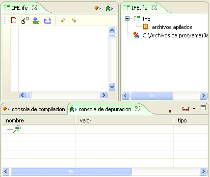
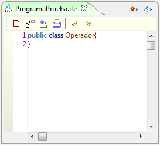
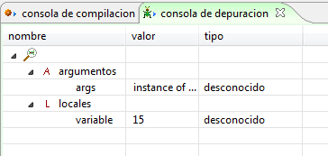
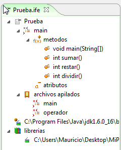

Framework IFE
IFE es un ambiente de seguimiento integrado para depurar código de forma sencilla y con resultados que ayudarán al programador a detectar las causas de un error. Integra las herramientas: editor y depurador.
La depuración es el Proceso de corregir el error o los errores encontrados durante la realización de pruebas al Software, en donde se busca encontrar las causas de dichos errores y eliminarlas.

Figura 1. Marcos de IFE
El editor permite resaltar las palabras claves del lenguaje facilitando la escritura de un código.
Editor: edite o inserte el código. correspondiente, el editor de código de colosoft permite trabajar comodamente sobre el código. Colosoft Resalta con colores diferentes, las palabras claves, variables, etc.

Figura 2. Editor de código de IFE
Colosoft también le permite visualizar la extensión de fragmentos de código. mediante el uso de llaves que indican la pertenencia del código a un contexto.
Figura 3. Llaves de código en IFE
Oculte o despliegue código. haciendo clic en los marcadores verdes ubicados al lado izquierdo del editor.

Figura 4. Ocultando y mostrando el código de funciones
Por su parte el Depurador es una arquitectura que permite verificar el valor de variables en tiempo de ejecución bajo el concepto de Puntos de Ruptura o Break Points.
El Framework IFE se conecta dentro del ambiente AIA en el marco de expresión de desarrollo ingenieril.

Figura 5. Marco de expresión de desarrollo
Además, IFE utiliza como marcos de extensión una perspectiva de compilación en la que aparecen los mensajes de error en la compilación y una consola de depuración en donde aparece el valor de las variabables en cada punto de ruptura.

Figura 6. Marco de depuración y compilación de IFE
También se utiliza un marco de extensión de presentación jerárquica, a través de un árbol que despliega el archivo que se va creando, actualizándose cada vez que se pueda.

Figura 7. Marco de Extensión de IFE
Funcionalidades de IFE "Integrated Framework Enviroment"
El Framework IFE permite realizar las siguientes acciones sobre los archivos ya existentes:
- Importar
- Guardar
- Imprimir
- Deshacer /rehacer

Adicionalmente el Framework IFE permite depurar los archivos fuentes importados.